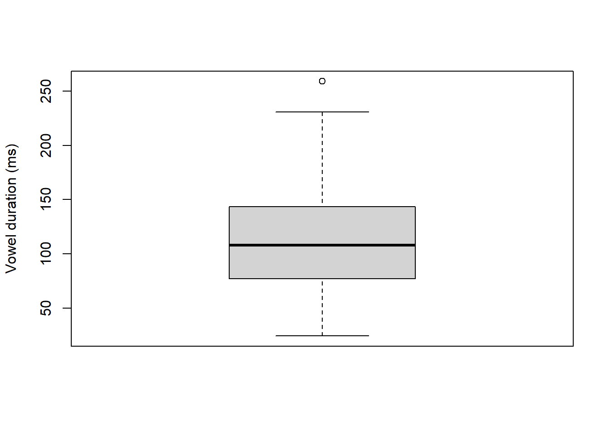
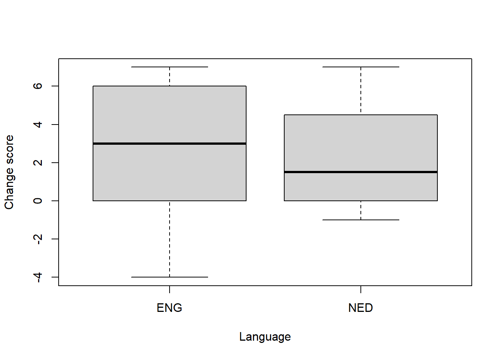

![]()
ID Number
Min. : 1.00 Min. : 1.0
1st Qu.: 53.25 1st Qu.:18.0
Median :105.50 Median :35.5
Mean :105.50 Mean :35.5
3rd Qu.:157.75 3rd Qu.:53.0
Max. :210.00 Max. :70.0
IU Speaker
I ^find I :hadn`t l\\/ooked at it# : 3 <1_7_A>:44
you ^just !st\\ick that on the b/ack# : 3 <1_4_B>:17
is ^{r\\eally 'got} !b\\ared a 'lot# : 2 <1_5_B>:16
^and [@] I t/ook 'out b\\its# : 2 <1_8_A>:14
^can you 'pick your 'own :tr\\ousers 'up# . : 2 <1_1_B>:13
^is there !such a th/ing as a "G\\uinness 'kit#: 2 <1_3_A>:13
(Other) :196 (Other):93
Gender Item Vowel Duration_IU_s Syllables_IU
female: 82 that : 19 CAT :40 Min. :0.400 Min. : 2.000
male :128 up : 12 DRESS:32 1st Qu.:0.965 1st Qu.: 5.000
this : 10 KIT :45 Median :1.220 Median : 7.000
get : 9 LOT :31 Mean :1.288 Mean : 7.376
it : 9 PUT :17 3rd Qu.:1.490 3rd Qu.: 9.000
got : 8 STRUT:45 Max. :2.990 Max. :22.000
(Other):143
Speech_Rate Frequency ACC BI Prox
Min. : 2.950 Min. :2.560 PRIM :70 Min. :1.000 Min. : 0.000
1st Qu.: 4.742 1st Qu.:5.330 SEC :70 1st Qu.:1.000 1st Qu.: 0.000
Median : 5.600 Median :6.155 UNACC:70 Median :4.000 Median : 0.000
Mean : 5.784 Mean :5.971 Mean :2.529 Mean : 1.848
3rd Qu.: 6.770 3rd Qu.:6.655 3rd Qu.:4.000 3rd Qu.: 3.000
Max. :10.060 Max. :7.330 Max. :4.000 Max. :12.000
Duration_ms Annotator_1_Duration Annotator_2_Duration
Min. : 24.40 Min. : 23.90 Min. : 17.70
1st Qu.: 77.25 1st Qu.: 75.78 1st Qu.: 72.78
Median :107.90 Median :111.70 Median :105.80
Mean :110.92 Mean :111.87 Mean :109.98
3rd Qu.:143.07 3rd Qu.:142.65 3rd Qu.:141.12
Max. :258.90 Max. :250.90 Max. :266.80
Data
MILS 2026: Introduction to Statistics
In this course, you explore, summarize, and visualize variables from the following datasets:
- English short vowels (Verbeke and Van Praet 2025)
- The English possessive alternation (Grafmiller 2023)
- English L2 vocabulary (De Wilde et al. 2019)
- Pre-Posttest data
Here is a brief explanation for each dataset, so that you have a basic understanding of what kind of data is provided.
All datasets can be found HERE
English short vowels
This dataset contains the measurements of 210 checked steady-state vowels. Previous studies have shown that suprasegmental factors have an impact on the duration of vowels, such as prosodic boundary strength and the proximity to the end of an intonation unit boundary. To the previous findings, this study adds another potential factor, namely the difference between primary accented, secondary accented, and non-accented syllables. By diversifying between these factors, we seek to establish the actual influence that each factor might have on the duration steady-state vowels, which will be assessed using multiple linear mixed-effects regression models. R code for the data analysis is provided.
The dataset includes 17 variables, providing information about Speaker, Items and Vowels.
Here is a quick summary pf the data:
One of the variables that we will examine is the duration of the vowels: Duration_ms. Let’s look at a summary and a boxplot for this variable:
Min. 1st Qu. Median Mean 3rd Qu. Max.
24.40 77.25 107.90 110.92 143.07 258.90 
The dataset provides the vowel duration of six vowels:
[1] "CAT" "DRESS" "KIT" "LOT" "PUT" "STRUT"English possessive alternation
The dataset includes an annotated dataset of N = 5098 tokens of English s-genitive (e.g. “the children’s voices”) and of-genitive (e.g. “the voices of the children”) constructions extracted from 5 components an of the Brown and Frown corpora of published written American English. The Brown corpus was compiled in the early 1960s, and the parallel Frown corpus in the early 1990s. The tokens are annotated for 18 syntactic, semantic, phonological, and contextual features. The dataset also includes the full sentence containing the token as well as metadata pertaining to the location of the token within the corpus. (2022-08-25)
We import the data and look at the first six rows:
Token Corpus Text Line_Number Genre Type
1 ba01.0001.02 Brown A01 1 Press s
2 ba01.0002.02 Brown A01 2 Press of
3 ba01.0004.03 Brown A01 4 Press of
4 ba01.0005.02 Brown A01 5 Press s
5 ba01.0007.02 Brown A01 7 Press of
6 ba01.0008.01 Brown A01 8 Press of
Whole_Genitive Possessor
1 Atlanta's recent primary election Atlanta's
2 the praise and thanks of the City of Atlanta the City of Atlanta
3 the size of this city this city
4 Georgia's registration and election laws Georgia's
5 the best interest of both governments both governments
6 the cost of administration administration
Possessor_Head Possessor_NP_Type Final_Sibilant Possessor_Animacy5
1 Atlanta proper N collective
2 City of Atlanta proper N collective
3 city common N collective
4 Georgia proper N collective
5 government common Y collective
6 administration common N inanimate
Possessor_Animacy3 Possessor_Animacy2 Possessor_Givenness
1 collective inanimate new
2 collective inanimate new
3 collective inanimate given
4 collective inanimate new
5 collective inanimate new
6 inanimate inanimate new
Possessum Possessum_Head Possessum_Animacy2
1 recent primary election election inanimate
2 the praise and thanks praise inanimate
3 the size size inanimate
4 registration and election laws law inanimate
5 the best interest interest inanimate
6 the cost cost inanimate
Semantic_Relation Prototypical_Semantics Preceding_s_genitive
1 OTH N N
2 OTH N Y
3 OTH N N
4 OTH N N
5 OTH N Y
6 OTH N N
Possessor_Thematicity Possessor_Length Possessum_Length Type_Token_Ratio Time
1 -2.455932 1 3 72 1960
2 -3.301030 4 4 66 1960
3 -2.346787 2 2 73 1960
4 -2.397940 1 4 75 1960
5 -3.301030 2 3 74 1960
6 -3.000000 1 2 75 1960How many observations are there for each type of possessive?
of s
3103 1995 If the final consonant of the possessor is a sibilant, then the use of the of-preposition is more likely (or, vice versa, one would not expect to get an s-possessive):
Type of possessive
Final sibilant of s
N 2229 1754
Y 874 241English L2 vocabulary
The dataset is based on De Wilde et al. (2019), available at https://osf.io/ndr47/. I have selected and renamed the variables for our purposes here. Table 1 provides an overview of the variables.
| ID | Variable | Description |
|---|---|---|
| 1 | Student | A unique identifier for each student |
| 2 | School | A unique identifier for each school |
| 3 | Class | A unique identifier for each class |
| 4 | PPVT | Score for the Peabody Picture Vocabulary Test (PPVT). Maximum score = 120 |
| 5 | Speaking | Score for the speaking test. Maximum score = 20 |
| 6 | Listening | Score for the listening test. Maximum score = 25 |
| 7 | ReadingWriting | Score for the reading and writing tests. Maximum score = 50 |
| 8 | Attitude | Attitude of student towards English: Positive vs. Negative |
| 9 | L1 | L1: Dutch vs. Multilingual |
| 10 | Sex | Sex of student: Male vs. Female |
The file is a tab delimited .txt-file. We open the file with read.delim(). The dataset is organised in long data format.
The first six rows of the dataset:
Student School Class PPVT Speaking Listening ReadingWriting Attitude L1
1 10 S1 1A 70 4 7 13 positive dutch
2 14 S1 1A 79 7 14 18 positive dutch
3 2 S1 1A 98 19 24 37 positive dutch
4 3 S1 1A 80 11 17 30 positive dutch
5 4 S1 1A 76 7 9 18 positive dutch
6 5 S1 1A 85 16 17 22 positive dutch
Sex
1 female
2 male
3 male
4 male
5 male
6 maleVideolang
This is a small dataset with pre- and posttest scores of students looking at a video in two languages: English (“ENG”) vs. Dutch (“NED”). It’s a tab delimited .txt file.
ID Lang Pretest Posttest
1 1 ENG 7 7
2 2 ENG 17 18
3 3 ENG 11 17
4 4 ENG 10 10
5 5 ENG 17 24
6 6 ENG 13 16Here is the change score (Post-Pre) by Language visualised in a clustered boxplot.

The boxplots suggest more improvement for English than for Dutch, but the difference is not significant, neither based on a t-test, nor on a non-parametric Mann-Whitney-Wilcoxon test.
Welch Two Sample t-test
data: vid$Change by vid$Lang
t = 0.48684, df = 25.683, p-value = 0.6305
alternative hypothesis: true difference in means between group ENG and group NED is not equal to 0
95 percent confidence interval:
-1.698725 2.752297
sample estimates:
mean in group ENG mean in group NED
2.714286 2.187500
Wilcoxon rank sum exact test
data: vid$Change by vid$Lang
W = 127.5, p-value = 0.5278
alternative hypothesis: true location shift is not equal to 0References
De Wilde, Vanessa, Marc Brysbaert, and June Eyckmans. 2019. “Learning English Through Out-of-School Exposure. Which Levels of Language Proficiency Are Attained and Which Types of Input Are Important?” Bilingualism: Language and Cognition 23 (1): 171–85. https://doi.org/10.1017/s1366728918001062.
Grafmiller, Jason. 2023. “The genitive alternation in 1960s and 1990s American English: Data from the Brown and Frown corpora.” Version V1. DataverseNO. https://doi.org/10.18710/R7HM8J.
Verbeke, Gil, and Wout Van Praet. 2025. “Replication Data for: The interplay between prosodic prominence and boundary strength in the production of English checked steady-state vowels.” Version V2. DataverseNO. https://doi.org/10.18710/QRXULF.